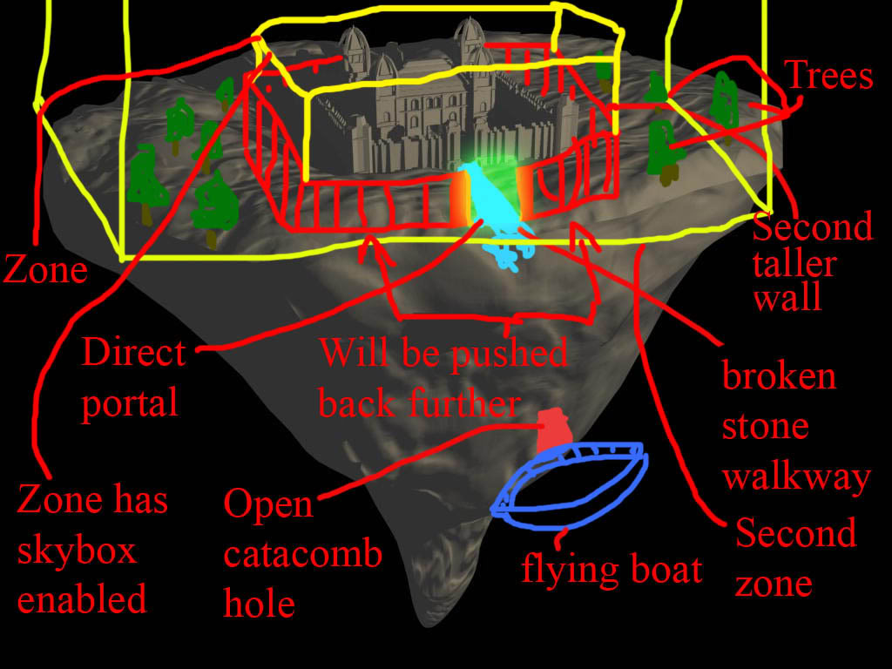
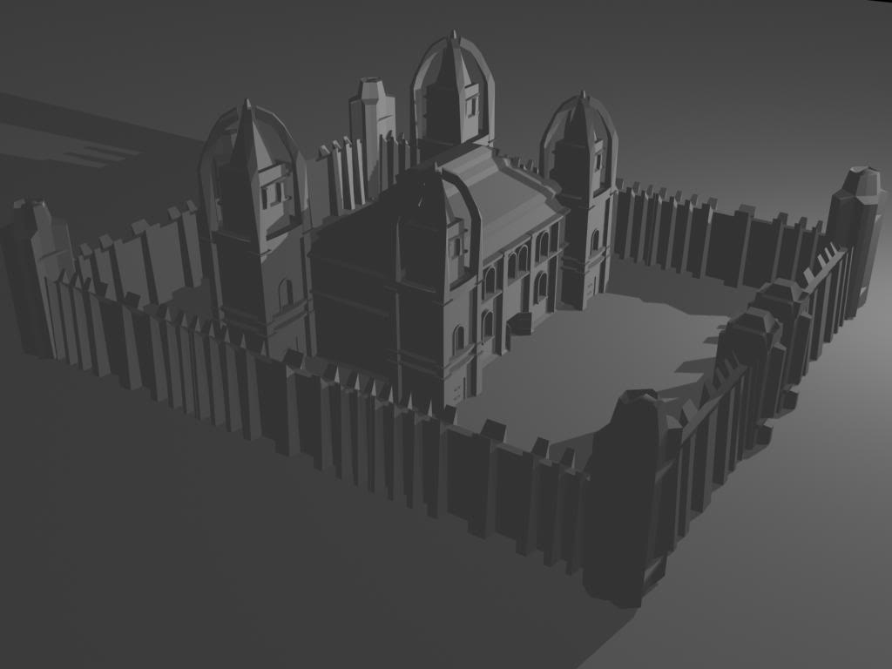
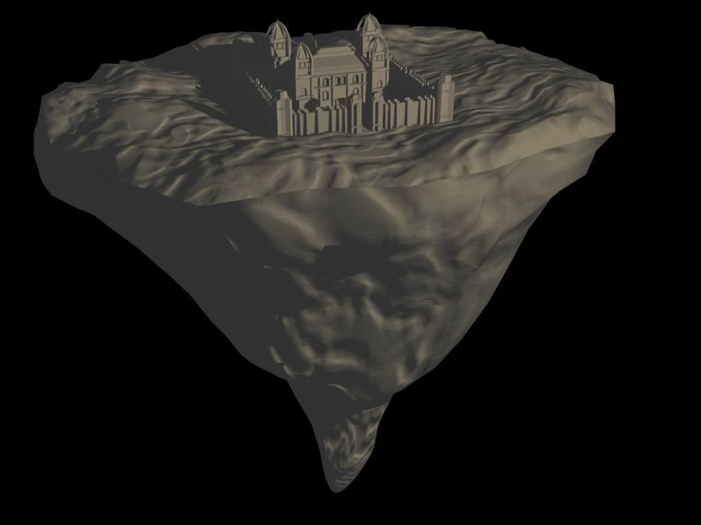

i'll copy and paste from our dev forums:
quote from me "however i came up with the idea when i could add a second wall that is taller, then i could place all of that into a zone with skybox enabled, then i could put a direct portal at the entrance and have all of this placed within its own zone. however this will only work if c4 supports nested zones where you have one zone inside of another (like a small box in the center of a large box). do you know if c4 supports this?"
if c4 does then i'll be a happy guy.
and for those wondering, the new level is a floating castle that has been ripped from the ground. i am also going to have fog and scrolling cloud textures too, hopefully it turns out well.
images:


